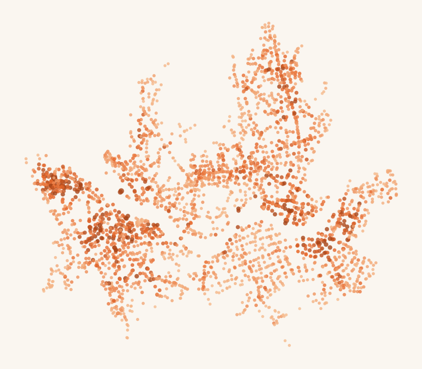
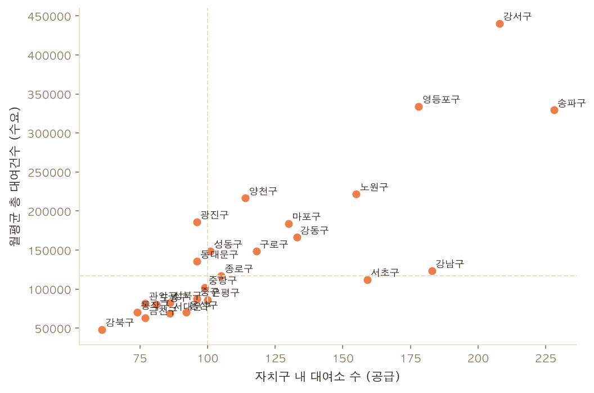
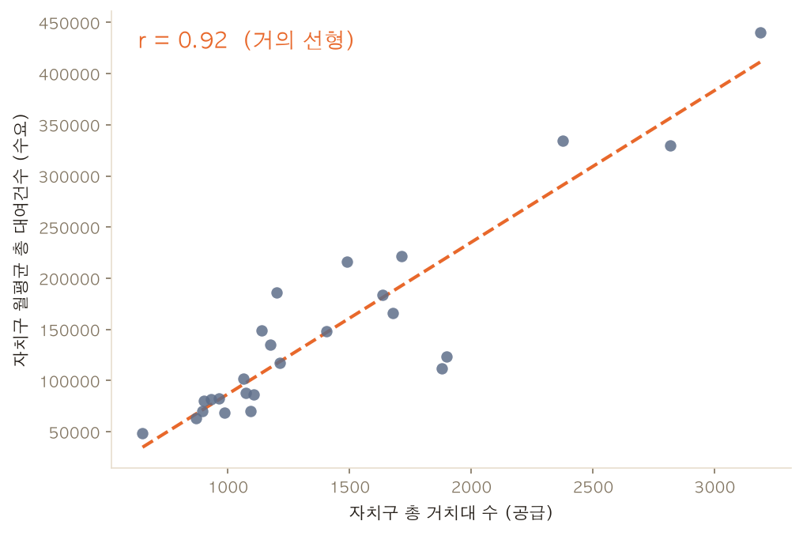

문제
따릉이는 대여소 기반 서비스라 대여소의 위치·밀도가 곧 사용자 접근성이다. 그러나 대여소가 실제 수요에 맞게 배치돼 있는지에 대한 정량 근거가 부족하다. 수요-공급 불일치는 이용 불편, 재배치 운영비 증가, 신규 투자 비효율로 이어진다.
목적
이용 현황을 공간·시계열로 분석해 ① 현재 분포의 수요-공급 정합성 진단, ② 신규 대여소 필요 여부·추천 위치 도출, ③ 수요 예측 기반 선제 운영 지원.
데이터 출처
대여소 마스터 · OA-21235
OpenAPI · tbCycleStationInfo
좌표·자치구·거치대수. 라이브 수집 3,230개 대여소(거치대 38,331개).
이용정보 월별 · OA-15248
CSV → 집계
대여소 × 성별 × 연령대 × 대여구분별 이용건수·이동거리·탄소량. 2023–2025 반기 파일 집계.
강한 연주기 — 겨울 저점, 여름·가을 성수기
3년간 동일 패턴이 반복된다. 겨울(1–2월) 최저, 5–6월·9–10월 피크. 한겨울 대비 성수기 약 3.5배.
월별 전체 대여건수(2023-01 ~ 2025-12). 2023-10 약 529만 건으로 최고, 겨울 저점은 약 160만 건. 안정적 계절 구조라 계절형 시계열 모델에 적합.
공간 불균형 — 이용량은 소수 대여소에 집중
대여소 자체도 도심·한강변에 조밀하지만, 이용량은 그보다 더 일부 대여소에 쏠린다. 자치구 단위로 보면 공급(대여소 수)과 수요(대여건수)가 어긋나는 구가 드러난다.

대여소별 월평균 대여건수 — 색·크기가 클수록 고수요. 한강공원·업무지구·대학가 핫스팟.

자치구 공급 vs 수요 — 좌상단(대여소 적은데 수요 높음)=공급 부족 후보, 우하단(대여소 많은데 수요 낮음)=공급 과잉 후보.
이용자 세그먼트 — 20–30대·정기권 중심
성별·연령대·대여구분 분해. 주력층과 이용 성격이 운영·마케팅 타깃을 결정한다.
연령대 비중
20–30대가 55.6% — 청장년 생활·통근 이용이 핵심.
대여구분
정기권 83% → 생활·통근 중심. 일일권(관광·레저)은 여름·가을에 더 뾰족.
성별 · 이용 강도
남성 비중이 높고 1회 평균 ~2.4km 이동. 연 수천만 건 이용으로 큰 탄소 절감 효익.
수요 예측 — 단순 계절 베이스라인이 최강
마지막 6개월 홀드아웃 백테스트(MAPE, 낮을수록 정확). 36개월(3주기)이라 계절형 모델도 포함해 동일 조건 비교.
모델별 오차 (MAPE %)
해석
전년 동월 반복(seasonal_naive)이 최저 오차(14.5%), SARIMA가 근접 2위. 계절 패턴이 안정적이라 단순 베이스라인이 강하다 — 복잡 모델이 항상 이기지 않는다는 점을 검증.
운영 예측에는 불확실 구간을 제공하는 SARIMA를 사용하되, 모든 신규 모델은 이 베이스라인을 이겨야 채택. 날씨·인구 등 외생변수로 머신러닝 확장 여지.
증설·재배치 후보 — 수요 대비 거치대 상위
다음 시즌 예측 수요가 평균 이상이면서 거치대 대비 수요(util = 예측건수 / 거치대수)가 높은 대여소. 결품 위험이 커 거치대 증설 또는 인근 신설이 필요한 1순위.
| 대여소 | 자치구 | 예측 대여(건/월) | 거치대 | util |
|---|---|---|---|---|
| 발산역 6번 출구 뒤 | 강서구 | 3,580 | 6 | 596.7 |
| 명덕고교입구(영종빌딩) | 강서구 | 4,568 | 8 | 571.0 |
| 장한평역 3번출구 | 동대문구 | 3,798 | 10 | 379.9 |
| 영문초등학교 사거리 | 영등포구 | 4,495 | 12 | 374.6 |
| 자양2동 주민센터 | 광진구 | 1,090 | 3 | 363.3 |
| 마곡나루역 2번 출구 | 강서구 | 8,906 | 25 | 356.2 |
| 장한평역 8번 출구 앞 | 성동구 | 2,840 | 8 | 355.0 |
| 서울축산농협(장안지점) | 동대문구 | 3,540 | 10 | 354.0 |
※ 거치대수는 현재 마스터 기준, 예측 수요는 전년 동월(2025-01) 대용. 강서·동대문에 후보 집중.
결론 — 의사결정으로의 연결
공간 불균형 확인
대여소·이용량 모두 도심·한강변 집중, 외곽 희소. "사용자 친화적 분포"라 보기 어려운 지역 존재.
신규 대여소 우선순위
자치구 4분면 좌상단(고수요·저공급) + 예측 수요 평균 이상 대여소의 저밀도 인접지부터.
거치대 재배치
util 상위 대여소는 결품 위험 → 우하단(저수요·고공급) 자원과 맞교환해 운영비 절감.
선제 운영
계절 예측상 봄·여름 반등 → 성수기 직전 핫스팟에 자전거 사전 배치(rebalancing)로 결품률↓.
세그먼트 맞춤
주력 20–30대·정기권(생활·통근). 일일권(관광·레저)은 한강변 여름 급증 → 대여소 성격별 차등 운영.
사회적 효익
연 4,203만 건·약 22,943톤 탄소절감 → 예산 정당화·ESG 보고 근거로 활용.
한계 — 문제를 잘못 정의했을 수 있다
가장 큰 한계는 데이터가 아니라 출발점의 문제 정의다. 본 연구는 "대여소가 수요에 맞게 배치됐나(수요-공급 mismatch)"를 전제했지만, 분석 결과는 오히려 그 전제가 약하다는 것을 보여준다.
재정의: 진짜 문제는 "공급"이 아니라 "경쟁 우위"
따릉이의 핵심 과제는 대여소 부족이 아니라 다른 이동 수단(지하철·버스·도보·전동킥보드·택시)과의 차별화·경쟁 우위에 가깝다. "어디에 대여소를 더 놓을까"는 이미 거의 해결된 질문에 가깝고, "사람들이 왜 따릉이 대신/함께 무엇을 타는가"가 답해야 할 질문이다.

공급은 이미 수요를 선형으로 추종 — 자치구 거치대 수와 월평균 대여건수의 상관 r = 0.92(대여소 수–수요 r = 0.83). 즉 구조적 수요-공급 불일치는 크지 않다.
그래서 본 분석이 놓친 것
자치구 수준에선 거의 완전 매칭, 대여소 수준에선 r = 0.39로 노이즈가 남는다. 하지만 이건 미세 조정 여지일 뿐 전략적 레버가 아니다. 증설·재배치(방법 4)의 실효 효과는 제한적일 가능성이 높다.
경쟁력을 측정할 데이터가 없었다
본 연구 데이터(대여소·이용건수)로는 경쟁 우위를 잴 수 없다. 빠진 것: ① 개별 통행(OD)·통행 목적, ② 지하철·버스·PM 등 경쟁 수단 분담률·대체 관계, ③ 날씨·요금·소득, ④ 이용자 이탈/재방문·구독 유지율. 이게 없으면 "왜 타는가/안 타는가"를 답할 수 없다.
다시 잡아야 할 연구 질문
다음 연구는 배치가 아니라 모달 경쟁·보완으로 재설정한다: ① 지하철 first/last-mile에서 따릉이가 보완재인가 대체재인가, ② PM(킥보드) 진입 후 따릉이 수요 변화, ③ 날씨 보정 수요·가격 탄력성, ④ 신규 가입자 재방문·이탈 곡선으로 본 제품 경쟁력.
요약 — 분석 자체는 유효하나(공급≈수요 확인), 그 결론이 곧 "문제 정의가 적절했다"를 뜻하진 않는다. 수요-공급 매칭이 이미 좋다는 사실은 역설적으로 이 프레임으로는 개선 여지가 작다는 신호이며, 따릉이의 다음 의사결정은 경쟁 우위·이용자 유지 쪽으로 옮겨가야 한다.
현실도 같은 신호 — 기후동행카드가 따릉이를 대체했다
2026년 1월 보도(오마이뉴스)는 본 연구의 재정의를 뒷받침한다. 대중교통 무제한권 기후동행카드 확산 후 따릉이 수요가 급감했고, 그 원인은 대여소 부족이 아니라 경쟁 수단으로의 이탈이었다.
보도 요지
2025년 따릉이 일평균 대여 10만 2,392회로 전년比 약 15% 감소(8개월이 10%↑ 감소). 주원인은 기후동행카드(월 6.2만원, 대중교통 무제한). 전동킥보드(PM)도 위축, 반면 자동차 교통량 감소는 0.5%에 그쳐 대중교통이 자동차가 아닌 따릉이·PM을 대체한 구도.
"어차피 매일 기후동행카드를 써야 한다면 보조 용도로 지하철을 타는 게 이득"
출처: 백진우, 「날씨 더 따뜻, 킥보드도 줄었는데… 따릉이 이용량 15% 감소, 왜?」, 오마이뉴스, 2026-01-17. 기사 보기 ↗
본 데이터도 동일 결과
처리한 2023–2025 데이터가 기사 수치를 그대로 재현한다 — 공급(대여소·거치대)은 안정인데 수요만 꺾였다.
기사의 일평균 102,392회·−15%와 거의 일치. 수요-공급 프레임으론 설명 못 하는 하락 = 모달 경쟁의 증거.
여기서 뻗어나오는 추후 연구 주제
"배치"가 아니라 "경쟁·대체"로 질문을 옮긴다. 기후동행카드 사례가 자연 실험(natural experiment)을 제공한다.
공공이동수단 vs 따릉이 수요 비교
지하철·버스·PM의 시공간 수요와 따릉이 수요를 나란히 놓고 대체/보완 탄력성 추정.
기후동행카드 도입 효과 인과 분석
도입 전후·지역 차이를 활용한 이중차분(DiD)으로 따릉이 수요 단절 효과를 인과 추정.
무제한권 가입자 이탈 코호트
기후동행카드 가입 시점 기준 따릉이 재방문·이탈 곡선 — 누가 떠나고 누가 남는가.
날씨·요금 통제 후 순수 경쟁효과
기온·강수·요금을 통제해 모달 선택의 순수 효과만 분리.
따릉이 고유 강점 영역
지하철 사각지대·단거리 first/last-mile·운동 효용에서 따릉이가 우위인 구간 식별.
정책 시나리오 시뮬레이션
기후동행카드에 따릉이 통합·연계 시 수요 회복 폭을 시뮬레이션해 정책 제언.